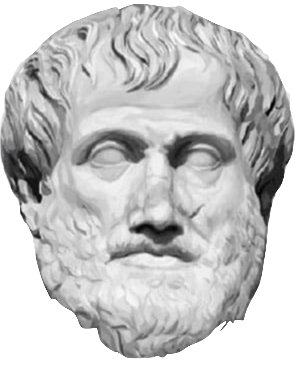

Soy Javier García Salcedo, y en abril de 2023 comencé una formación con
MIT/xPRO en desarrollo full-stack con React y MongoDB---un verdadero viraje
en mi formación profesional, hasta entonces centrada en la enseñanza de lógica y filosofía.
Esta página está dedicada a la documentación de mi progreso a lo largo de esta formación.
Mis antecedentes en lenguajes de programación son modestos. Originalmente,
la necesidad de editar textos con caracteres lógicos y matemáticos para mis
clases me llevó a estudiar LaTeX---el primer parteaguas. LaTeX no es un lenguaje
de programación, pero muchos de sus principios sintácticos (bloques, alcance,
anidación, entre otros ejemplos) son parte del acervo de recursos lingüísticos
que comparte la comunidad desarrolladora. En estos primeros y dubitativos pasos,
el apoyo siempre entusiasta de Carlos César Jiménez (QEPD) fue invaluable.
Una vez que me sentí cómodo con LaTeX, y "picado" por el gusanito de la programación,
tomé un segmento de un curso básico de Duke University en programación web.
Este cursito me ayudó a entender en términos gruesos cómo funciona la web, qué
es un servidor y un navegador, qué es UX, y me dio los rudimentos para comprender
qué son y cómo se usan HTML y CSS. El surco había sido trazado...
Después de tomar este pequeño curso, decidí aprender Java de manera auto-didacta.
¡Excelente decisión! Éste fue un segundo y muy importante parteaguas en mi
formación como desarrollador web. Adquirí el excelente libro de Bell/Parr
Java para Estudiantes (Prentice Hall, 2011), y empecé a estudiarlo en
mis ratos libres. Java es un lenguaje de programación fuertemente estructurado,
lo cual plantea ciertas exigencias al comienzo pero, a mediano
plazo, es algo que resulta una excelente escuela. Fue con Java que primero
aprendí qué es una aserción condicional, un ciclo, una
variable, un arreglo, una función, una clase o un objeto. Comenzar a estudiar con
MIT/xPRO implicó una pausa en mi formación como programador Java, pero retomar
y terminar mi Bell/Parr es algo que sin duda está entre mis prioridades a futuro!
No debería cerrar esta sección sin antes mencionar el parteaguas número 0: la
lógica. He pasado muchas felices horas estudiando y enseñando lógica, en particular
su variedad matemática y, sin lugar a dudas, la compenetración con esta disciplina
ha sido uno de los eventos más decisivos y fructiferos en lo que a mi vida
intelectual se refiere. Así que, ¡un hurra por la lógica, la programación y los nuevos
senderos profesionales!
